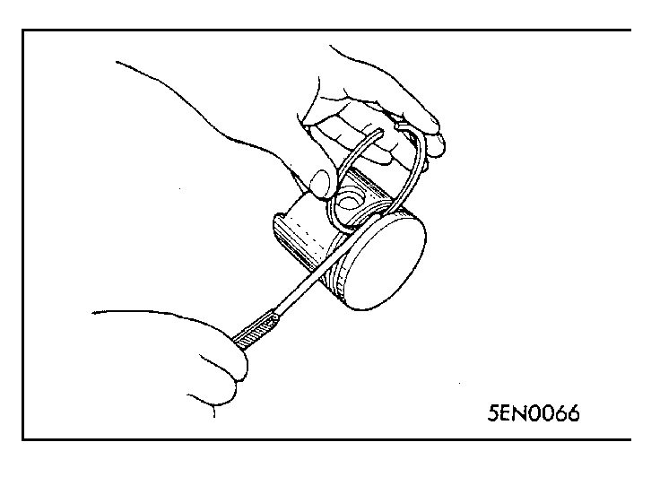
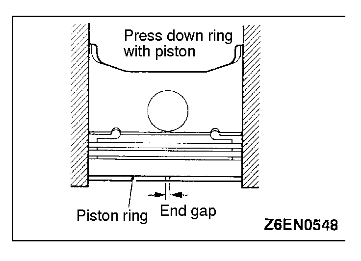
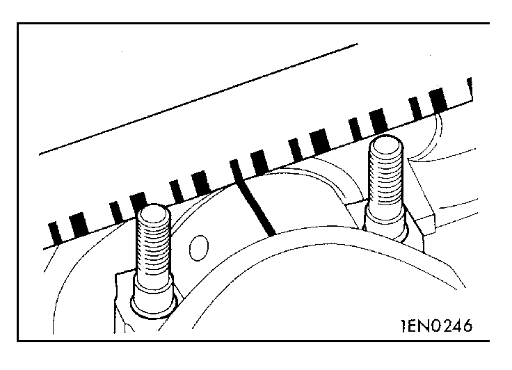
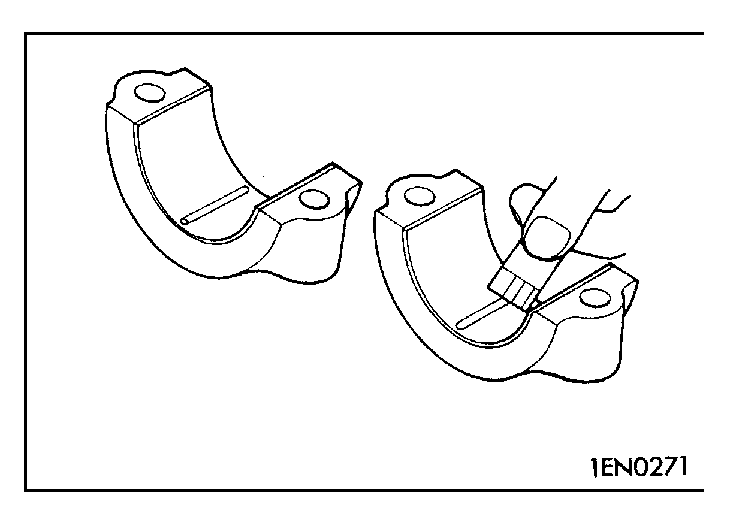

![[Previous]](https://mitsubishitechinfo.com/data/F24S/BUTTONS/fprevg.png)
![[Next]](https://mitsubishitechinfo.com/data/F24S/BUTTONS/fnextg.png)


|
INSPECTION
PISTON
(1)Replace the piston if scratches or seizure is evident on its surfaces (especially the thrust surface). Replace the piston if it is cracked.
PISTON PIN
(1)Insert the piston pin into the piston pin hole with a thumb. You should feel a slight resistance. Replace the piston pin if it can be easily inserted or there is an excessive play.
(2)The piston and piston pin must be replaced as an assembly.
PISTON RING
(1)Check the piston ring for damage, excessive wear, and breakage and replace if defects are evident. If the piston has been replaced with a new one, the piston rings must also be replaced with new ones.
(2)Check for the clearance between the piston ring and ring groove. If the limit is exceeded, replace the ring or piston, or both.
| Item |
Standard value mm (in.) |
| No. 1 ring |
0.04 - 0.08 (.0016 - .0031) |
| No.2 ring |
0.02 - 0.06 (.0008 - .0024) |
|
Limit: 0.1 mm (.004 in.)
|
|

|
(3)Install the piston ring into the cylinder bore. Force it down with a piston, its crown being in contact with the ring, to correctly position it at right angles to the cylinder wall. Then, measure the end gap with a feeler gauge.
If the ring gap is excessive, replace the piston ring.
| Item |
Standard value mm (in.) |
| No. 1 ring |
0.25 - 0.35 (.0098 - .0138) |
| No.2 ring |
0.40 - 0.55 (.0157 - .0217) |
| No.3 ring |
0.10 - 0.40 (.0039 - .0157) |
|
Limit:
No. 1, No. 2 ring 0.8 mm (.031 in.)
Oil ring 1.0 mm (.039 in.)
|
|

|
CRANKSHAFT PIN OIL CLEARANCE
(PLASTIGAGE METHOD)
(1)Remove oil from crankshaft pin and connecting rod bearing.
(2)Cut the Plastigage to the same length as the width of bearing and place it on crankshaft pin in parallel with its axis. |
|

|
(3)Install the connecting rod cap carefully and tighten the nuts to specified torque.
(4)Carefully remove the connecting rod cap.
(5)Measure the width of the Plastigage at its widest part by using a scale printed on the Plastigage package.
Standard value: 0.02 - 0.05 mm (.0008 - .0020 in.)
Limit: 0.1 mm (.004 in.) |
|